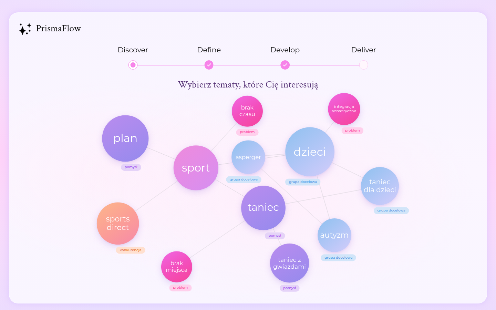

Windows
Windows 10 lub 11 · x64
Pobierz instalator .exeZbierz sygnały z rynku, poznaj potrzeby użytkowników i zaplanuj ekrany aplikacji. PrismaFlow prowadzi cały projekt w jednym lokalnym studiu.
Pobierz aplikację
Windows 10 lub 11 · x64
Pobierz instalator .exex86_64 · glibc 2.39 lub nowsza
Pobierz AppImageArchiwum .tar.gzZainstaluj Ollamę i pobierz model poleceniem ollama pull gemma3:4b. Uruchom PrismaFlow i wpisz temat pierwszego projektu.
Na Linuksie aplikacja korzysta z WebKit2GTK 4.1, a AppImage wymaga również FUSE 2. Możesz też uruchomić PrismaFlow w przeglądarce przez Docker Compose.